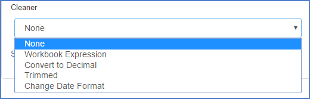
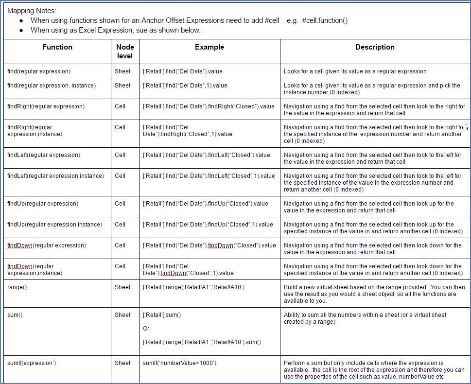

Detailed TOC for 'Appendix - Using the Excel Plugin'
- Introduction
- More Details
- Selection of the Excel Classification/Parsers Plugin
- Markers, Cleaners and Mapping
- Excel Object Model (EOM)
- Syntax for Excel Workbook Expression
- Additional Excel Classification functions
Appendix - Using the Excel Plugin
Introduction
The Excel Classification Parser Plugin is able to extract the data structure from Excel and then present it back to the PD3P index for storage. Then, during the Classification process, the Pendo Digital Data Discovery Platform is able take this structure and expose it in the UI for visualization, the creation of Markers and to specify and extract data to Target Entities/Attributes via Mapping.
Note: When using the Excel Plugin and using a Mapping of Type = Excel Workbook Expression, Safe Navigation returns a null when unable to handle the expression, allowing more mapping flexibility.
For example: getSheet('cheese')?.find('hello')?.rightToDate()?.getDateHelper()?.format() ?: "Missing Date". Previously, if this expression was run and there was no date to the right, an exception occurred. Now, by returning a null, we can populate the attribute or variable with an text such as 'Missing Date'.
More Details
One of the more advanced parts of the extraction process is the use of the internal Excel Object Model (EOM). This Object Model is available both in the Workbook Expressions and the Python scripting language.
You are able to use either the expression language or Python to traverse the EOM in order to perform more complex queries to extract data.
Invoking the Plugin
Selection of the Excel Classification/Parsers Plugin
You can select this Plugin while importing a Unstructured Data Set (UDS) or from the UDS component via the Edit function in the Indexing Plugin tab.
As this plugin is a Builder, no other Plugin is needed for your spreadsheets. Further, the functionality of this plugin, as exposed in the Classification component, allows you to use Python expressions as part of an Excel Workbook Expression (explained below) without having to specifically enable the Python Plugin.
The actual usage of this Plugin is in the Classifications component.
Plugin Options
When selecting this Plugin, you have several options. Many, but not all, of the options revolve around memory management for very large spreadsheets as well as optimizing the total processing time,especially when Importing a large number of files.
- Recalculate Value based on formula: This forces the PD3P to re-evaluate formulas before extracting the value. WARNING: Use this IF you are unsure that the spreadsheet calculations were updated before the last save AND you are certain that all data needed to re-evaluate the formulas exist in the spreadsheet.
- Use last cached value: This tells the PD3P to use existing cached values for each cell in the spreadsheet. Use this if you are comfortable that the spreadsheet calculations were updated. Also, be sure to use this if data in formulas comes from someplace other than the spreadsheet itself.
- Extract Text Representation: Use if you wish the system to extract the raw data content of the spreadsheet as well as structured data. Note that this will double the amount of space used on the PD3P, so only do this if required to due so by the project on which you are working.
- Password: If the spreadsheets require passwords to gain access, supply the passwords. Passwords are never visible or retrievable by the UI and are stored encrypted ion the server.
- Sheet name whitelist (Regular expression): This is a spreadsheet display filter based on worksheet names. Use this if you wish to view or classify based on data in specified worksheets rather than entire spreadsheets. Use of RegEx is supported, allowing multiple sheet selection and other logic to decide on what will be imported. For example, entering (Summary|Sheet2) would display only the sheets named Summary OR Sheet2. Purpose of this option is memory management and time management while importing.
- Sheet index whitelist (i.e.1,2): This means the PD3P will only index the listed worksheets. This helps when you have some worksheets that have enormous amounts of data that are not needed for searching or extraction. An example would be enormous spreadsheets that have some worksheets that have lots of data that is not actually needed in the extraction project. Rather, you would be interested in the worksheets that have summary information. This can save considerable indexing time and disk space. Supports positive and negative numbers. For example 1 means first sheet, -1 means last sheet, 2 means second sheet, -2 means second to last sheet.
- Maximum Rows to Import: Default is 100,000 rows of data per spreadsheet. Purpose of this option is memory management.
Looking for the formulas? You might notice that there is not a "raw" option for Excel parsing. If you want the formula for a cell you use syntax like this in a workbook expression:
sheets0.getCellReference("B2").formula
Markers, Cleaners and Mapping
Markers
If you are dealing with a large quantity of files for a particular project, there is a very good chance that there are variations in the layout that have occurred over time. The more time that has passed since the initial use of the file, and the more users involved, the higher the chances of variations occurring. Examples would be that new rows, new column and/or new worksheet tabs have been added to a spreadsheet or there may have simply been a reordering of some of the columns.
In order to extract the data you want and only the data you want, care must be taken to take these variations into consideration. This a core concept in play when creating Classifications .
Markers, as explained in Classifications, are used to uniquely identify a sub-set of the files, in this case spreadsheets. You may use one or more markers, actually as many as you need, so that the Pendo Digital Data Discovery Platform can scan all the documents that you point it to, via Associated Documents Sets, and automatically determine when any files fits the Classification criteria.
There are three types of markers currently supported:
- Excel Fixed Reference – meaning that the specified Reference cell within a specified Sheet must contain exactly the value that is in the ‘Target Value’.
- General Query Marker - placeholder.
- Regular Expression Cell and Values – meaning that you may write Regular Expressions (RegEx) in either or both of the Reference or Target Value fields. Please go to Regular Expression Reference Page for all available syntax options. This has a very powerful and feature rich syntax. Please be sure to select Java as the flavor of RegEx.
Select which of these types of Markers you wish to use via the dropdown by 1 in the screen below and then clicking the + sign.
You may use as many Markers as needed to classify a group of files. You will get immediate feedback on how many documents would be classified by the Markers you have made by noticing the tab heading Document Preview (x/y).
AND vs. OR logic for Markers
Multiple Markers are joined logically by 'AND', i.e. marker1 AND marker2 must be true for a match. You may want to use 'OR' logic. This can be done within a RegEx. The syntax is
sheet!(part1|part2|part3)
For example, in the 'Reference' box
Servicer Report!G(4|5)
means look in the Sheet called Service Report and then look in G4 OR G5 for whatever you enter in the 'Target Value'.
THIS IS ONE OF THE WAYS YOU CAN DEAL WITH VARIATIONS IN FORMATS WHILE STILL USING ONE CLASSIFICATION
Hint: If you are wondering why some of the documents are not selected, you can go back to the Document Preview (x/y) tab and select the Invert Markers checkbox. This will show you the documents that will NOT be selected. You can then open them up and see why it would not have been included and then either adjust the Marker or create a new Classification for that UDS.
These documents WOULD be included based on the current markers.
These documents WOULD NOT be included based on the current markers.
Example 1: The Fixed Reference type of Marker was selected by number 2 above. The Reference cell is A1 in the worksheet named ‘Summary’ and we have specified ‘John Doe’ as a Target Value, meaning that location must have the exact string 'John Doe'. Thus the Pendo Digital Data Discovery Platform would successfully Attach this Classification for any spreadsheet with ONLY letters ‘John Doe’ in cell A1 of a worksheet called ‘Summary’. If ‘Jane Doe’ or even ‘Doe’ was in cell A1, or if the worksheet tab were called ‘Statement Summary’, the Classification would fail.
Example 2: The Regular Expression Cell and Value type of Marker was selected by number 3 above. This option allows you to use RegEx in either the Reference or Target Value fields. In this example, the Reference is the same as in Example 1: the worksheet and the cell are specified exactly. We did not use a RegEx there. However, for the Target Value .*Doe was specified. A period followed by an asterisk means wildcard in RegEx syntax. Placing it at the front or end of letters would therefore meant anything ending or starting with those letters would match. Thus the Pendo Digital Data Discovery Platform would successfully attach this Classification for any spreadsheets that have anything ending in ‘Doe’ in cell A1 of a worksheet called ‘Summary’. So if ‘Jane Doe’, ‘John Doe’ or even just ‘Doe’ was in cell A1, the Classification would work.
Note that since the Reference is exact, if this same cell value for a worksheet tab were called ‘Statement Summary’ the Classification would fail. If the Reference was .*Statement!A!1:A1, then any worksheet name that ended with ‘Statement’ would work and the cell A1 would be examined for the Target Value. For example, worksheets named ‘Summary Statement’, or ‘August Statement’ would both work. 'Statement for August’ would fail as the name of the worksheet does not end with the letters ‘Statement’.
Mapping Overview
The end goal of a Classification is to extract data from the Excel file to a Target Entity thus making structured data out of unstructured data. Now that we have identified a set of like files, we need to specify that the data is currently in a Worksheet:Row:Column gets put into Entity:Attribute.
Moving to the Mapping tab, you have available to you several ways of mapping the data as seen below.
The specifics on usage are a bit different for each type of targeting option. Most of the options can make use of a Cleaner. All of the options have you select the specific Entity/Attribute as the end extraction point of the Excel values.
Mapping Options
• Anchor Offset
The idea here is to find some text to find to move to a cell node, then use that node as an Anchor and move to the real target cell, i.e. move to the Offset.
- Select the Target Attribute.
- Confirm or change the Sheet Name to be searched.
- Type the search string. You may also use a RegEx or spEl expression.
- Enter the number of the Instance of the text. This allows you to specify that you want to find the 1st, 2nd, 3rd, etc. occurrence of the search string.
- Select the desired Offset from the dropdown. The last option let you write a RegEx or spEl expression to deal with any needs not provided for by the other selections.
• Excel Fixed Reference
Works the same as in Markers. Exact matching only.
• Excel Workbook Expression
Advanced formula and math capabilities. The available options for syntax and functions is discussed below.
• Fixed Value
Very useful for tracking various metadata items that are not actually in the document such as the file name, Classification Name, etc. and even enables using an Approved List of Values.
Please see * Appendix – Using Fixed Values including Approved List of Values during Classification Mapping
• Groovy Script (Attribute)
Allows the user to write scripts directed at an Attribute. Advanced option.
• Groovy Script (Entity)
Allows the user to write scripts directed at an Entity. Advanced Option.
• Python Expression (with Excel Workbook) Use Python scripting to search and extract data. Advanced option.
• Regular Expression
Works the same as in Markers. JAVA RegEx syntax is supported. Advanced Option.
• Triangulated Entity
Using contents of a cell to determine a Row Header and a Column Header, find the cell that intersects with that Row and Column.
- Select the Target Attribute.
- Select the Sheet Name to be searched.
- Enter in the text to look for that will define the search row. JAVA RegEx is also supported.
- Specify if you are searching for the 1st, 2nd, etc. occurrence of the text to define the row.
- Enter in the text to look for that will define the search column. JAVA RegEx is also supported.
- Specify if you are searching for the 1st, 2nd, etc. occurrence of the text to define the column.
- The PD3P will find the intersection of the row and the column to determine the value found - triangulation.

Mapping Errors
If you put an invalid expression will see the exception message as the value of the cell in the results - this is to allow you to see if an expression is working in one place and not in another.
Cleaners
If desired, you may also employee a Cleaner after you have navigated to the desired cell. The available options for Cleaners are:
- Workbook Expression: get the value in the specified cell(s) and perform advanced formatting or math. The available options for syntax and functions is discussed below.
- Convert to Decimal: as data is by default extracted as a string, if you wish to extract the numbers into an Attribute that is numeric, use this option.
- Trimmed: remove all formatting (i.e. $ or ,) and retrieve that numeric value of the specified cell.
- If you have found a date, use this option to reformat the date as needed.
Advanced Expressions
Excel Object Model (EOM)
The EOM is typically available from its root object, which is an instance of ExcelWorkbook. Below that is a simple hierarchical structure:
- ExcelWorkbook
- Collection of ExcelSheet
- Collection of ExcelRow
- Collection of ExcelCell
- text-segments
- Collection of ExcelCell
- Collection of ExcelRow
- Collection of ExcelSheet
Here are the methods that are available for the objects in each level.
ExcelWorkbook
The root object is basically a collection of sheets, which are available as a list.
| Goal | Syntax |
|---|---|
List<ExcelSheet> |
getSheets() |
| Get a sheet by name | getSheetByName(String name) |
| Get the first sheet that matches a regular expression | ExcelSheet getSheetByRegEx(String regularExpression) |
| At the top level you can also get a cell by reference such as SheetName!A1 | ExcelCell getCellReference(String cellRefefence) |
Or use a regular expression for the sheet name, e.g. Exam.*!A1 |
ExcelCell getRegExCellReference(String cellRefefenceWithRegularExpression) |
ExcelSheet
The next object down is ExcelSheet. (May be known to Excel users as Worksheets or Worksheet Tabs)
| Goal | Syntax |
|---|---|
| Get a list of rows | List |
| Access a cell on the sheet using a standard reference, e.g. A1 | ExcelCell getCellReference(String path) |
| Get a row at a position (zero indexed) | ExcelRow getRowAtPosition(int row) |
| Get a cell at a specific X Y co-ordinate (zero indexed) | ExcelCell getCellByXY(int x, int y) |
| Find a cell on the sheet using a value | ExcelCell findCellByValue(String value) |
| Find a cell on a sheet using a value regular expression | ExcelCell findCellByRegEx(String regex) |
ExcelRow
The next level down object is ExcelRow.
| Goal | Syntax |
|---|---|
| Get a complete list of the available cells on the row (note that this is sparsely populated, only cells with a value exist here) | List |
| There are also helpers again at this level to support accessing the cells. Get the last cell with a value | ExcelCell getLastCell() |
| Get the first cell with a value | ExcelCell getFirstCell() |
| Get the cell at a specific position (zero indexed) | ExcelCell getCellAtPosition(int position) |
ExcelCell
At the lowest level is the Cell object. This has no children but supports many ways in which you are able to navigate the spreadsheet's structure.
| Goal | Syntax |
|---|---|
| Determine if the value could be number by removing non-numeric (except period) | boolean isNumeric() |
| Convert the cell value to a big decimal (good for arithmetic) | BigDecimal getDecimal() |
| Get the value of the cell | String getValue() |
| Get the cell to the right of this cell | ExcelCell right() |
| Get the cell to the left of this cell | ExcelCell left() |
| Get the next cell to the right that contains a value | ExcelCell rightWithContent() |
| Get the next cell to the left with content | ExcelCell leftWithContent() |
| Get the cell up one row from this cell | ExcelCell up() |
| Get the cell down one row from this cell | ExcelCell down() |
| Get the cell at the end of the row this cell is on | ExcelCell toEndOfRow() |
| Convert the cell value to a big decimal (good for arithmetic) | BigDecimal getDecimal() |
Interacting with the helper in a Workbook Expression
Workbook Expressions have been introduced in order to make it easier to work with the custom helpers as a way of getting to targeted data and of cleaning that value.
A Workbook Expression is based on the Spring Expression Language (spEl). Here is a good link on the subject. (http://docs.spring.io/spring/docs/current/spring-framework-reference/html/expressions.html).
spEl allows for a wide range of functions to be applied quickly and effectively in order to manipulate the data or leverage helpers.
If you are using a Workbook Expression, the Pendo Digital Data Discovery Platform bases the root object as the instance of ExcelWorkbook, therefore you can write expressed as though that object is in context. For example:
sheets[1].getCellReference("A1").value
This expression would use the list of sheets and get the one in position 1 (which is the second sheet in Excel) and then get the cell references by A1 and get the value.
You can also use the cell helpers. For example:
sheets[1].getCellReference("A1").decimal + sheets[1].getCellReference("A2").decimal
All of the helpers on the objects are available from before. You can also use some special helpers for example:
["Master"]["0"]["-1"]
This would allow you to treat the workbook, sheet and row as a dictionary in order to access the data, and using -1 as a way to get the last cell in the row.
Date Handling in Workbook Expressions
Here are several functions that allow you to find or manipulate dates:
| Description | |
|---|---|
#cell.getDateHelper().lastDayOfMonth().format() |
|
#cell.getDateHelper().firstDayOfMonth().format() |
|
#cell.getDateHelper().addMonths(1).format() |
|
#cell.getDateHelper().addDays(1).format() |
|
#cell.getDateHelper().addYears(1).format() |
You can use negative numbers in the 'add' function to subtract dates or part of data fields. For example:
#cell.getDateHelper().addMonths(-1).format()
You can use JAVA date formats to reformat a date. For example:
#cell.getDateHelper().format("mmm yyyy")
You can take a string value and turn it into a date helper. For example:
getDateHelper("01-05-1900","mm-dd-yyyy").lastDayOfMonth().format()
Working with Expressions in Cleaners
You may optionally make use of a Cleaner while Mapping. When you are working with a Cleaner, you would be manipulating a value found from the core Mapping in some way. In this case the value that is extracted is the result of your Mapping plus the effect of the Cleaner.

Workbook Expression give the power of RegEx or spEl to be used against the previously found value. For example, if you wanted to put dashes in front of the Value you would enter:
'-'+.value+'-'
_Convert to Decimal A mapping returns values that are a string by default. This preserves some formatting such as the $ in $10. If you wish to extract the value into a Target Attribute that is numeric, you will need to first convert it to decimal.
Trimmed removes extra spaces the may proceed or trail the desired string.
Change Date Format allows you to change the format of a data field to which you mapped. When selected, this option opens additional fields for your use:

| Examples of Date Formats | Result |
|---|---|
| dd-mm-yyyy | 15-12-2017 |
| dd/mm/yyyy | 15/12/2017 |
| mm-dd-yyyy | 12-15-2017 |
| mm/dd/yyyy | 12/15/2017 |
| mmm dd, yyyy | Dec 15, 2017 |
Syntax for Excel expressions
There are two syntaxes available to you: Method Syntax and Notation Syntax.
When you use the Method Syntax, you use parentheses () and the first row or column starts with 0.
When you use Notation Syntax, you use straight brackets [] and the first row or column starts with 1.
Notation syntax may be a bit easier to use for Excel users, but there are a few things it cannot do - like leftWithContent. And the Method syntax lines up with the EOM.
Lots of Examples
- These two examples are equivalent:
Method Syntax .getRowAtPosition(0)
Notation Syntax sheets[1][“1”][“1”]
There are certain things that the Method syntax can do that Notation cannot handle - like leftWithContent or sheet[1][“1”].getFirstCell()
Keep in minds that there are difference. For example:
sheet[1][“1”][“1”]
would return the value in the first cell (the cell at position 1)
while
sheet[1][“1”].getFirstCell()
would return the first cell that has a non-null / non-blank value.Returning a fix value (called a literal)
'hello'
Or a number
45.Use either method to get the value in the cell at the first position.
| Method Syntax | Notation Syntax |
|---|---|
| getSheet('Retail').getRowAtPosition(0).getCellAtPosition(0).getValue() | Notation: ['Retail']['1']['1'].value |
| Goal | Notation Syntax |
|---|---|
| What if I didn't know the sheet name - just that it is the first one? | getSheet(1)['1']['1'].value |
| What about doing math? | ['Retail']['44']['6'].decimal - ['Retail']['45']['6'].decimal |
| What about a cell reference? | getSheet(1)['A1'].value or with row/column broken up gettSheet(1)['1']['A'].value |
| What about a sheet index? | [1][1][1].value |
| Popular Cell functions | |
|---|---|
| rightToError | rightToNumber |
| rightToBoolean | rightToDate |
| Popular Row functions | |
|---|---|
| firstError | lastError |
| firstNumber | lastNumber |
| firstBoolean | lastBoolean |
| firstDate | lastDate |
Workbook level functions:
A sum function at the workbook level.
- For example:
sum(sheets[0].getCellReference("B2"), sheets[0].getCellReference("B11"))
which would go to the first sheet and add B2 and B11. - If you want to work with the decimal value:
sheets[0].getCellReference("B2").numberValue
This is the actual number - not the cleaned representation from a string (therefore it must be a number in Excel) - Also you have the following workbook functions available. The examples below all reference the first sheet and cell B2:
sheets[0].getCellReference("B2").dateValue
sheets[0].getCellReference("B2").booleanValue
sheets[0].getCellReference("B2").errorValue - SumIf(regEx) which conditionally sums a range of values in Excel document.
- CountIf(RegEx) - Count the number of cells in the range which meet the criteria.
- AvgIf(RegEx) -Averages the number of cells in the range which meet the criteria.
- MaxIf(RegEx) - Determines the maximum numerical value from cells in the range which meet the criteria.
- MinIf(RegEx) - Determines the minimum numerical value from the number of cells in the range which meet the criteria.
Semi-complex Full Mapping Example
Here is an example of a spreadsheet that you would get each month. Perhaps a new row is added each month or perhaps the latest info is on the bottom with a trailing 11 months data above. In this case, it does not matter as the approach is the same. We want to extract only the latest information from a spreadsheet each month, not the older data.
The goal is to get a row into a table for each month/year that also has Net Credit Losses and Net Investment Value. Of course we would be doing this for thousands or millions of files, which is the beauty of classification.
Marker: You could use a Regular Expression Marker= Credit!A4:A4
and a Target Value=AS OF.*
This would tell the Pendo Digital Data Discovery Platform to look at all spreadsheets in the dataset that have a sheet called “Credit” and then see if cell A4 starts with “AS Of”.
We would obviously want several mappings including the Date and the Net Credit and Net Investment numbers.
Focusing on getting a number, not text, for ‘Net Investment’ we can use an Anchor/Offset Mapping:

In English, the expression means: Go to the Sheet named "Credit" and locate cell A4. It has contents of “AS OF: Month, Day” but we want to strip the AS OF: and the comma and replace those with nothing in order to leave the month and year and then trim to take off any blank spaces at the end. We now have a value that looks like “mmmmmm yyyy”. Now take whatever is in that cell and use it to find that particular month/year combination in the spreadsheet ( findCellByValue) and then go to the right until you find a cell with something in it (not a blank cell), repeat that (rightWithContent) twice, take what is in that cell turn it into a decimal.
Additional Excel Classification functions
